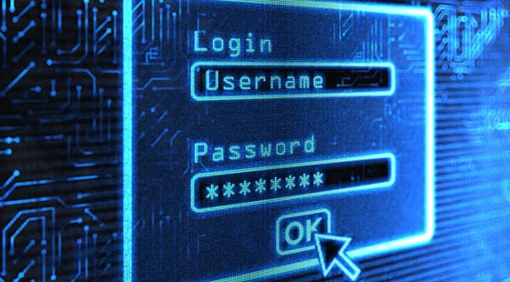

Toutes les donnees echangees entre les applications et le serveur sont cryptees via Diffie-Hellman. Chaque machine diffinie un paramettre qu'ils s'echangent pour generer une même clef de cryptage secrete avec laquelle ils crypteront et decrypteront tout les messages. Ceuci permet de prevenir les attaques du type "Man in the middle" (l'homme du milieu) en ne laissant pas les donnees transitees en clair.

Les mots de pass sont "sales" et "hashes" en utilisant la librairie bCrypt qui permet en plus d'augmenter la complexite de l'algorithme de hashage pour une securite acccrue. Ce systeme permet de prevenir notament des attaques du type brute force, rainbow tables et attaques par dictionnaire. Le resultat est le stockage dans la base d'une empreinte du mot de passe. Quand une tentative de connection sera effectue, le mot de pass entre alors subira les memes operations et sera compare a l'empreinte correspondant au login se trouvant dans la base. Si les empreintes correspondent, alors les mots de pass sont les memes et l'utilisateur est autentifie.
Retour